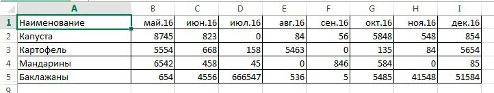
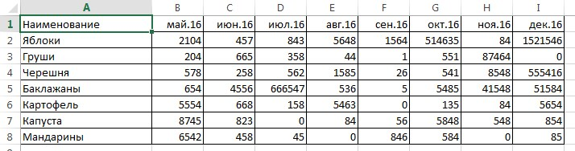

В функции ВПР прописать номер столбца формулой
Есть таблица с данными (рис.1). В столбцы необходимо перенести данные из другой таблицы (рис.2). В графе "наименование" порядок и количество данных в двух таблицах не совпадает. Поэтому, воспользуемся формулой ВПР и перенесем все данные из столбцов с датами из таблицы 2 в таблицу 1. (Подробнее о формуле ВПР)

рис.1

рис.2
При написании формулы ВПР, номер столбца приходится указывать вручную. То есть, для каждого столбца свой номер от 2 до 9.
=ВПР($A2;Лист2!$A:$I;2;)
Если таких столбцов, идущих подряд будет около 20-30? В каждом столбце менять одну цифру в формуле довольно долго и утомительно. В этом случае нам поможет доп. формула, которую мы включим в ВПР. Называется она СТОЛБЕЦ. Имеет вид:
=СТОЛБЕЦ([ссылка на столбец]);
В квадратных скобках аргумент необязательный. Но в нашем примере необходимо указать ссылку на столбец - начало отсчета. На второй таблице видно, что данные мы будем возвращать, начиная с столбца В, закончим на I. Но, вручную пропишем только B, все остальное протянем.
Итак, в первой таблице в ячейке В2 пишем ВПР и вместо номера столбца "2" укажем СТОЛБЕЦ(B:B).
=ВПР($A2;Лист2!$A:$I;СТОЛБЕЦ(B:B);)
Итог будет идентичен. Но если первый вариант формулы (с указанием номера столбца) мы протянем вправо, то формула будет копировать данные только со 2 столбца. А если мы воспользуемся формулой СТОЛБЕЦ, то при протягивании автоматически в формуле будет исправлена ссылка с B:B на диапозон С:C и так далее до I:I. Что очень удобно. И исключает ручную корректировку номера столбца.
Стоит отметить, что формула СТОЛБЕЦ может быть использована и в других ситуациях, она не является приложением к ВПР и считается самостоятельной. Но о других способах применения как-нибудь в другой раз.
Опубликовано: